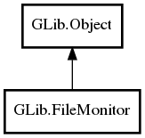

GLib.FileMonitor Reference Manual
Packages
gio-2.0
GLib
FileMonitor
cancelled
rate_limit
FileMonitor
cancel
emit_event
is_cancelled
set_rate_limit
changed
FileMonitor
Object Hierarchy:

Description:
public
abstract
class
FileMonitor
:
Object
Namespace:
GLib
Package:
gio-2.0
Content:
Properties:
public
bool
cancelled
{
get
; }
public
int
rate_limit
{
set
;
get
; }
Creation methods:
protected
FileMonitor
()
Methods:
public
virtual
bool
cancel
()
public
void
emit_event
(
File
child,
File
other_file,
FileMonitorEvent
event_type)
public
bool
is_cancelled
()
public
void
set_rate_limit
(
int
limit_msecs)
Signals:
public
virtual
signal
void
changed
(
File
file,
File
? other_file,
FileMonitorEvent
event_type)